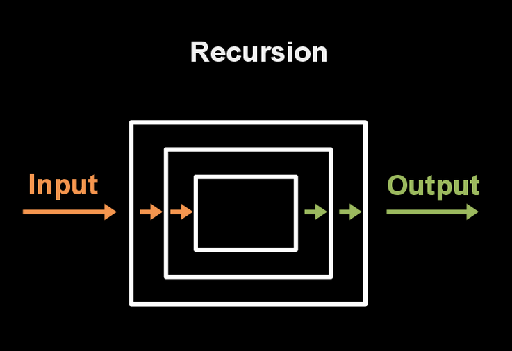

The Elegant way of Coding - Recursion
Aug 10, 2015
Factorial!
Recursion is a programming concept whereby a function invokes itself. Recursion is typically used to solve problems that are decomposable into subproblems that are just like the original problem, but a step closer to being solved.

def factorial_maker(num)
if num == 1
return num
end #base case
result = num * factorial_maker(num-1)
return result
end
Print Num to 0
def ntooh (num)
if num == 0
return num
end
p num
ntooh(num-1)
end
Add 0 unto Num
def plus(num)
if num == 0
return 0
end
result = num + plus(num-1)
return result
end
The key of recursion is the base case and the 'trust'. You must trust the fact that your recursion function will return exactly what you will ask for. Base case will stop the function once the condition was NOT meet. Therefore this is a 'breaker'. It is also important that the function must specify what this recursion will return.